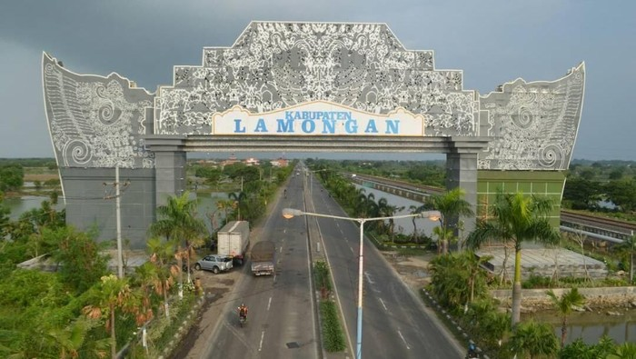

Kabupaten Lamongan
(Hanacaraka: ꦑꦧꦸꦥꦠꦺꦤ꧀ꦭꦩꦺꦴꦔꦟ꧀, Pegon: لامَوڠان, tr. Lamongan)
adalah sebuah kabupaten di Provinsi Jawa Timur, Indonesia. Pusat pemerintahan Kabupaten
Lamongan terletak
49 km barat Kota Surabaya,
Kabupaten Lamongan dilintasi Jalan nasional jakarta - Surabaya, Dan merupakan
salah satu wilayah yang masuk dalam kawasan metropolitan Surabaya, yaitu Gerbangkertosusila.